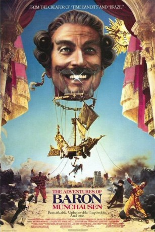

#7160 Die Abenteuer des Baron Münchhausen
Alternativ: The Adventures of Baron Munchausen
Auszeichnungen: für 4 Oscars nominiert 3 BAFTA-Awards gewonnen
 
 IMDB-Wertung: 7.2 / 10
IMDB-Wertung: 7.2 / 10  Metascore: 0
Metascore: 0 
The fantastic tale of an 18th century aristocrat, his talented henchmen and a little girl in their efforts to save a town from defeat by the Turks. Being swallowed by a giant sea-monster, a trip to the moon, a dance with Venus and an escape from the Grim Reaper are only some of the improbable adventures.
Jahr: 1988
Dauer: 126 Minuten
FSK: 12
Land: England Studio: Constantin FilmTonspuren: DD5.1 - ,
Untertitel:
Auflösung: 1080p (1920x1040) Größe: 10199 MB
Genre: Komödie, Abenteuer, Fantasy
Regisseur:  Terry Gilliam
Terry Gilliam
Drehbuch: Petra Biondina Volpe
Soundtrack:
Darsteller:
Datei: X:\1988\Abenteuer des Baron Münchhausen, Die (1988, FSK12, 1920x1040).mkv seit 02.10.2017
Festplatte: HD 1987-1991
 Es gibt insgesamt 66 Filme in der Gruppe '1988'
Es gibt insgesamt 66 Filme in der Gruppe '1988'